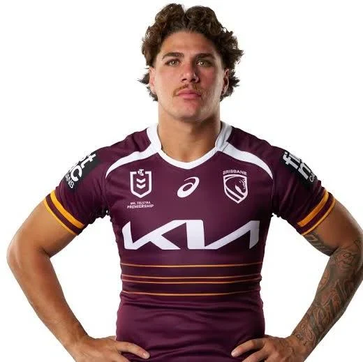

THE TEN-TRY CHALLENGE
RUN
IT.
One player. The full field.
Ten tries. No second chances.
KEYBOARD CONTROLS
A tackle or touch resets your streak.SELECT YOUR RUNNER 01 / 08

1
✓ SELECTEDBRISBANE BRONCOS · FULLBACK
SPEEDReece Walsh
+ SKILL
Touch or keyboard · Fictional gameplay ratings